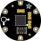

In this workshop, you will connect a accelerometer to an Arduino via the I2C interface. You will program the Arduino to send a angle information over the serial interface when you move the accelerometer.
An accelerometer is an sensor device that measures forces. These forces can be static, like the force of gravity, or dynamic like the force of a moving object. They are great for measuring the angle of an object or telling you the speed of your remote-control drone.
A magnetometer is a sensor that determines where the strongest magnetic force is coming from. They are generally used to detect magnetic north. Thus, the magnetometer acts like a compass. They are great for determining your direction.
The combination of the accelerometer and the magnetometer works well to determine the orientation of an object in 3D space. This is how your game controller controls the image of a video game.
For this lab, you will connect an an Adafruit Flora accelerometer/compas sensor to the Arduino Uno. The accelerometer communicates with the Arduino via the I2C interface. It should be noted that the Flora sensor is powered by +3.3volts. Make sure not to attach the Flora's power pin to +5volts, it may damage the sensor.
The sketch program will read the three (3) axis values from the accelerometer and the magnetometer reading and will send the data to the serial port. You will be able to read the data using the Arduino IDE's serial monitor.
To begin, grab the parts listed in the Parts section and assemble them as illustrated in the diagram in the Breadboard section.
Once your circuit is assembled, type, or cut and paste, the program sketch into the Arduin IDE. Once the sketch is entered, upload the program to the Arduino by clicking the upload button. Use the Arduino IDE to type in the code in the Program section and upload it to your Arduino. Make sure you select the proper port for the Arduino. The port is set under the Tools > Serial Port > (the comm port of your Arduino) menu item.
Next, upload the program by going to File > Upload to I/O Board (ctrl+U). The sensors data should be displayed on the serial monitor.
The following the parts for this lab.
Accelerometer |
Measures angle and acceleration Four (4) pin. VCC (3.3v), GND, SCL and SDA. |
#include Wire.h>
#include <Adafruit_LSM303.h>
Adafruit_LSM303 lsm;
void setup()
{
Serial.begin(9600);
pinMode(7,OUTPUT);
digitalWrite(7, LOW);
// Try to initialise and warn if we couldn't detect the chip
if (!lsm.begin())
{
Serial.println("Oops ... unable to initialize the LSM303. Check your wiring!");
while (1);
}
}
void loop()
{
lsm.read();
Serial.print("Accel X: "); Serial.print((int)lsm.accelData.x); Serial.print(" ");
Serial.print("Y: "); Serial.print((int)lsm.accelData.y); Serial.print(" ");
Serial.print("Z: "); Serial.println((int)lsm.accelData.z); Serial.print(" ");
Serial.print("Mag X: "); Serial.print((int)lsm.magData.x); Serial.print(" ");
Serial.print("Y: "); Serial.print((int)lsm.magData.y); Serial.print(" ");
Serial.print("Z: "); Serial.println((int)lsm.magData.z); Serial.print(" ");
delay(1000);
}
Check the make sure the proper serial port is selected. You select the serial port using the menu items tools > serial port.
The accelerometer will not work if the I2C pins are not properly connected. Make sure that the SDA and SCL line match between the accelerometer and the Arduino.
Add four (4) LEDs to your circuit. These LEDs represent forward, backwards, left and right. Program the Arduino to light each LED when the acclerometer passes a threshold for each direction.